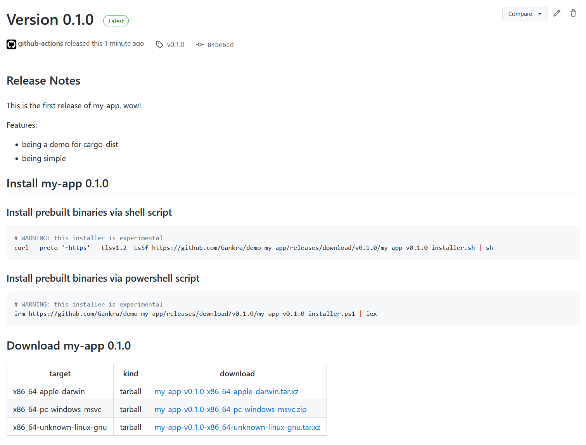

Introduction
cargo-dist extends Cargo to support all the extra things you want to do when building the final shippable binaries for an application, so we can turn this:
git commit -am "Chore: 0.1.0 release"
git tag "v0.1.0"
git push
git push --tags
into this:

Locally, cargo-dist can do the following:
- Picking good build flags for "shippable binaries"
- Making zips and installers for the resulting binaries
- Generating machine-readable manifests so other tools can understand the results
Being able to build a zip on your own machine is nice and all, but in practice you probably want to have infrastructure for building and hosting the binaries for all the platforms you care about. To help streamline this, cargo-dist has builtin support for bringing up your infra (currently only Github CI and Github Releases, but we intended to support other platforms in subsequent releases)!
Just run cargo dist init and it will generate its own CI scripts which:
- Waits for you to push a git tag for a new version (v1.0.0, my-app-v1.0.0, ...)
- Selects what apps in your workspace to announce new releases for based on that tag
- Creates a draft Github Release to announce the apps in and host the downloads
- Adds the relevant release notes from your RELEASES or CHANGELOG file
- Spins up machines to build the selected apps for your supported platforms
- Uploads the various zips/installers to the Github Release
- On success, publishes the Github Releases
The scripts are intentionally minimal, and each machine's job roughly amounts to "install cargo-dist", "run it exactly once", "upload the artifacts it reported". It will always be easier to do builds in CI, but we want to shrink that gap as much as possible.
We want you to be able to copy that one cargo-dist invocation CI did, run it on your machine, and get the same results without any fuss (not to bit-level precision, but to the kinds of precision normal people expect from cargo builds). No setting up docker, no weird linux-only shell scripts that assume a bunch of tools were setup in earlier CI steps.
The main obstacle to this is "cross-compilation is hard", but other folks are making that easier every day, and eventually we'll help you with that too.